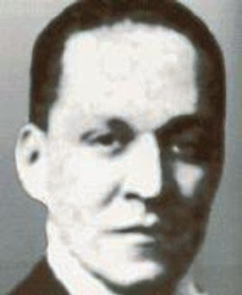

Historia
Cuzcatlán, era desde la antiguedad la ciudad célebre por sus riquezas y el poderío de sus príncipes, la misma fue considerada la principal metrópoli de los indios pipiles de El Salvador Precolombino. Fundada en 1504 por el monarca Topiltzín Acxitl y librada de muchas guerras por el valiente indio Atlacatl, quien reinó en el lugar antes de la época colonial. En 1770, su población apenas la formaban 19 familias indígenas y 115 ladinos. Los siglos han transcurrido y sucesos importantes han marcado la historia de la ciudad. Cuscatlán constó con los distritos o partidos de Cojutepeque y Suchitoto, creados respectivamente en 1786. Fue erigido el municipio de Cojutepeque por decreto del Supremo Gobierno el 22 de mayo de 1835, como su cabezera departamental.
.
Narrador y político salvadoreño, nacido en Cojutepeque (en el departamento de Cuscatlán) el 31 de octubre de 1895, y fallecido en San Salvador el 27 de mayo de 1942. Por la agudeza, sencillez y eficacia de sus célebres narraciones en verso, escritas con la intención de censurar los peores comportamientos del ser humano, está considerado como el primer fabulista de la literatura salvadoreña
